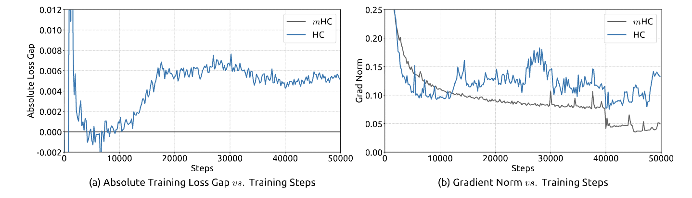

The Identity Crisis: How DeepSeek Fixed the Flaw in Hyper-Connections
Part 1: The Golden Rule of Deep Learning
In the world of Deep Learning, we have a “Golden Rule” that has allowed models to evolve from the image classifiers of 2015 to the reasoning giants of today: the Identity Mapping. For a very long time, this was seen a standard which did not need any further engineering but DeepSeek’s team begs to differ here.
Think of a standard Residual Network (ResNet) as a single-lane highway. The “Identity Mapping” is the rule that allows traffic (information) to flow straight through from start to finish without stopping. Mathematically, we express this as:
\[x_{l+1} = x_l + F(x_l, W_l)\]
 Figure 1(a-c) from the paper - shows residual connection, HC architecture, and mHC architecture
Figure 1(a-c) from the paper - shows residual connection, HC architecture, and mHC architecture
Why is this critical?
This simple addition was a key enabler in scaling deep networks. The identity mapping allows gradients to flow cleanly through hundreds of layers, which became essential as architectures grew from models like ResNet-50 (~25 million parameters) to modern LLMs with hundreds of billions of parameters.
The Physics: During training, when the model looks backward to learn (backpropagation), the gradient flows through the identity path (the x_l term) without any modification, ensuring the signal doesn’t vanish or explode, even after traveling through hundreds of layers.
Concrete Example: Imagine you’re training a 100-layer network. During backpropagation, gradients need to flow from layer 100 back to layer 1. Without the identity mapping, each layer might multiply the gradient by some value like 0.9. After 100 layers: 0.9^100 ≈ 0.0000266. Your gradient has essentially vanished - the early layers can’t learn anything. With the identity mapping, there’s always a direct gradient path back to early layers, preserving the signal.
Part 2: The Innovation - Hyper-Connections (HC)
Recent research introduced “Hyper-Connections” (HC) to upgrade this highway. HC widens the road by an expansion rate of n (typically n=4).
Understanding the Dimensions
It’s important to visualize this correctly. We aren’t just making the single vector 4 times longer. Instead, we are building 4 parallel streams (lanes) that run side-by-side.
Standard: 1 Stream of size d (e.g., 4096)
HC (n=4): 4 Streams, each of size d
\[M^{(t)} = T_r(T_c(M^{(t-1)}))\]
Intuition: Think of it like having 4 different “perspectives” on the same information. One stream might specialize in syntax, another in semantics, a third in world knowledge, and the fourth in reasoning patterns. By having these parallel streams, the model can maintain multiple specialized representations simultaneously. (See Figure 1(b) above)
HC builds complex interchanges to mix the traffic between these lanes:
\[\prod_{i=1}^{100} H^{res}_{100-i} \text{ is ALSO doubly stochastic}\]
Where:
- reads: \(H^{pre}_l \in \mathbb{R}^{1 \times n}\) reads from the streams into the layer (aggregates 4 streams → 1 input)
- writes: \(H^{post}_l \in \mathbb{R}^{1 \times n}\) writes the layer output back to the streams (distributes 1 output → 4 streams)
- mixes: \(H^{res}_l \in \mathbb{R}^{n \times n}\) mixes information between the parallel streams (4 streams → 4 streams)
Concrete Example of Mixing: Suppose stream 1 contains grammatical information and stream 2 contains semantic information. The mixing matrix \(H^{res}_l\) might have learned that for certain tasks, you need 70% grammar + 30% semantics in the first output stream, and 20% grammar + 80% semantics in the second output stream. This is what “mixing” means - creating weighted combinations of the specialized streams.
This diversification drastically increases the model’s capacity to learn and reason by allowing different “lanes” to specialize in different features.
Part 3: The Problem - The Crash
But there was a catch. HC removed the traffic rules. Without the safety of the Identity Mapping, the mixing matrices could arbitrarily multiply the signal strength.
Visualizing the Failure
Imagine a graph where the X-axis is the Layer Number (Depth) and the Y-axis is the Signal Variance (Energy).
Stable ResNet: The line is flat. The energy stays constant at 1.0 from Layer 1 to Layer 100, effectively following the “speed limit.”
Unstable HC: The line looks like an exponential “rocket launch.” It starts small, but the compound effect causes it to explode.
The Math Behind the Explosion: In standard ResNet, after 100 layers you have:
\[\|H^{res}_l x\|_2 \leq \|x\|_2\]
The x_0 term is unchanged - it’s literally the same vector that entered layer 0.
In HC, after 100 layers you have:
\[\mathcal{M}_{res} = \{H^{res}_l \in \mathbb{R}^{n \times n} \mid H^{res}_l \mathbf{1}_n = \mathbf{1}_n, \mathbf{1}_n^T H^{res}_l = \mathbf{1}_n^T, H^{res}_l \geq 0\}\]
That product of 100 matrices is the problem. Even if each H^{res}_l has a maximum eigenvalue of just 1.02 (only 2% above unity), after 100 layers: 1.02^100 ≈ 7.24. Your signal has amplified by 7×! And with uncontrolled matrices, you might see eigenvalues of 1.1 or higher, leading to: 1.1^100 ≈ 13,780 - complete explosion.
 Figure 3 from the paper - shows the dramatic explosion in gradient magnitude for HC reaching nearly 10^4
Figure 3 from the paper - shows the dramatic explosion in gradient magnitude for HC reaching nearly 10^4
 Figure 2 from the paper - shows the training instability and loss spikes in HC
Why This Breaks Training: When gradients explode to magnitudes of 10^4, the optimizer (Adam, SGD, etc.) receives nonsensical update signals. It’s like trying to park a car when the speedometer randomly jumps between 5 mph and 5,000 mph - you have no reliable information to make good decisions.
Part 4: The Rules of the Road (The Math)
To fix the instability caused by Hyper-Connections, the authors had to impose strict “traffic rules” on the mixing matrices. They restrict \(H^{res}_l\) to the Birkhoff Polytope (\(\mathcal{M}_{res}\)), the geometric set of all Doubly Stochastic matrices:
\[x_100 = \left(\prod_{i=1}^{100} H^{res}_{100-i}\right) x_0 + ...\]
Where \(\mathbf{1}_n\) is a column vector of ones. While this looks abstract, it translates to two simple physical rules:
Rule 1: Row Stochasticity
\[H^{res}_l \mathbf{1}_n = \mathbf{1}_n\]
The sum of weights for each outgoing stream is exactly 1.
What this means: Imagine you have 100 “units of energy” in stream 1. Row stochasticity says: “You can redistribute this energy to streams 1, 2, 3, 4 in any proportion you want (e.g., 25% to each, or 70% to stream 1 and 10% to each of the others), BUT the total output must still be 100 units.” You cannot create energy out of nowhere.
Example:
Stream 1 (100 units) → [0.7×100 → Stream 1, 0.1×100 → Stream 2,
0.1×100 → Stream 3, 0.1×100 → Stream 4]
Total output = 70 + 10 + 10 + 10 = 100 unitsThis prevents the “Rocket Launch” effect by ensuring the total signal energy cannot be amplified.
Rule 2: Column Stochasticity
\[\mathbf{1}_n^T H^{res}_l = \mathbf{1}_n^T\]
The sum of weights for each incoming stream is exactly 1.
What this means: For any output stream, the contributions from all input streams must sum to exactly 1. This ensures every input feature is fully utilized and not “lost.”
Example:
Output Stream 1 receives:
0.4 from Input Stream 1
0.3 from Input Stream 2
0.2 from Input Stream 3
0.1 from Input Stream 4
Total = 0.4 + 0.3 + 0.2 + 0.1 = 1.0This prevents vanishing gradients by ensuring no stream is “forgotten” or “zeroed out.”
The Mathematical Guarantee: Conservation Properties
When a matrix is doubly stochastic, it provides powerful conservation guarantees. The result is a convex combination - a weighted average where the weights sum to 1.
Why this matters:
\[\|H^{res}_l x\|_1 = \|x\|_1\]
Doubly stochastic matrices exactly preserve the 1-norm (sum of absolute values) of any vector. This is stronger than just bounding the norm - it’s perfect conservation. Additionally, they bound the 2-norm: \(\|H^{res}_l x\|_2 \leq \|x\|_2\). This dual property ensures that the signal energy is conserved during propagation, preventing both explosions and vanishing.
Furthermore - the crucial closure property: If you multiply two doubly stochastic matrices together, you get another doubly stochastic matrix! This means:
\[\prod_{i=1}^{100} H^{res}_{100-i} \text{ is ALSO doubly stochastic}\]
So even after 100 layers, the composite mapping still respects the “speed limit” of 1.0.
Why doubly stochastic instead of spectral normalization? While spectral normalization (constraining maximum singular value to 1) also prevents explosions, doubly stochastic matrices offer a key advantage: they allow flexible mixing between streams while preserving total energy. Spectral normalization only preserves norm without enabling the rich cross-stream information exchange that makes multi-stream architectures powerful. The doubly stochastic constraint provides stability AND expressivity.
The Enforcer: Sinkhorn-Knopp
We cannot train these constrained parameters directly using standard gradient descent. Instead, we train a “messy,” unconstrained parameter matrix \(\tilde{H}^{res}_l\) and force it to follow the rules during the forward pass using the Sinkhorn-Knopp algorithm.
This algorithm acts like a strict accountant. It alternates between normalizing rows and columns:
\[M^{(t)} = T_r(T_c(M^{(t-1)}))\]
Where \(T_r\) normalizes rows (divide each row by its sum) and \(T_c\) normalizes columns (divide each column by its sum).
Step-by-step example:
Starting matrix (after exp to make it positive):
[1.0 3.0]
[2.0 10.0]Row sums: [4, 12], Column sums: [3, 13]
Iteration 1 - Normalize rows:
[0.25 0.75] (row 1 / 4)
[0.17 0.83] (row 2 / 12)Column sums: [0.42, 1.58]
Iteration 1 - Normalize columns:
[0.60 0.47] (col 1 / 0.42, col 2 / 1.58)
[0.40 0.53]Row sums: [1.07, 0.93]
After ~20 iterations, both constraints are satisfied to high precision! The Birkhoff polytope is a convex set, and Sinkhorn-Knopp is performing an alternating projection between two linear constraints, guaranteed to converge.
What Do These Matrices Actually Look Like?  Figure 8 from the paper - Visualizations of learned mappings. Top row shows unstable HC matrices with extreme values. Bottom row shows mHC’s doubly stochastic matrices with controlled, balanced weights.
Figure 8 from the paper - Visualizations of learned mappings. Top row shows unstable HC matrices with extreme values. Bottom row shows mHC’s doubly stochastic matrices with controlled, balanced weights.
This figure reveals the difference in practice:
HC (top row): The unconstrained matrices show extreme values (ranging from -259 to +509 in composite mappings). When you see a row sum of 18.73 or -15.29, that’s the “rocket launch” happening - signals being amplified or attenuated wildly. Notice how the forward signal gain and backward gradient gain (labeled on axes) deviate massively from 1.0.
mHC (bottom row): Every matrix is beautifully balanced. Individual entries vary (showing the network learned something!), but crucially: row sums ≈ 1.0, column sums ≈ 1.0. Even in the composite mapping ∏ P_Mres(H^res) after 60 layers, the gains stay near 1.0. The Sinkhorn constraint is working exactly as designed.
This is the “before and after” of manifold constraints - transforming chaos into controlled, stable mixing.
Part 5: Cheating the Memory Wall
The mathematical elegance of the Birkhoff Polytope comes with a heavy price tag. By setting the expansion rate to n=4, the authors effectively widened the highway by four times, creating a massive data pile-up.
Quantifying the Cost
Consider training a standard 100-layer Large Language Model with hidden dimension d = 4096, batch size = 1 million tokens, and FP16 precision (2 bytes per number).
Standard Model (n=1):
Memory = 100 layers × 1M tokens × 4096 dim × 2 bytes
= 819.2 GB ≈ 800 GBHyper-Connected Model (n=4):
Memory = 100 layers × 1M tokens × (4 × 4096) dim × 2 bytes
= 3,276.8 GB ≈ 3.2 TBThis 3.2 Terabytes is the Memory Wall. For reference, an NVIDIA H100 GPU has 80 GB of HBM memory. You’d need 41 H100 GPUs just to hold the activations!
Why is mHC Memory-Heavy but Compute-Light?
Let’s break down the operations to understand this crucial trade-off.
Computational Complexity (FLOPs): For a mixing operation \(H^{res}_l x_l\) where \(H^{res}_l \in \mathbb{R}^{4 \times 4}\) and \(x_l \in \mathbb{R}^{4 \times 4096}\):
FLOPs = 2 × 4 × 4 × 4096 ≈ 131K operations per tokenCompare this to the FFN layer:
FLOPs = 2 × 4096 × (4 × 4096) ≈ 134M operations per tokenThe mHC mixing is 1000× cheaper in terms of compute! It’s literally just multiplying a tiny 4×4 matrix by the streams. This is “lightweight math.”
Memory Complexity (Bytes): But we need to store those 4 expanded streams:
Memory = 4 streams × 4096 dim × 2 bytes = 32,768 bytes per token
vs.
Standard = 1 stream × 4096 dim × 2 bytes = 8,192 bytes per token4× more memory, but the computation is negligible. Modern GPUs are memory-bandwidth limited, not compute-limited. Reading 3.2 TB of data from memory takes over 1 second, even if the actual math only takes 0.1 seconds! This is why the “recomputation trick” works - we trade a cheap 0.1s of extra compute to avoid paying the expensive 1s+ of memory I/O.
Solution 1: Kernel Fusion (The “Countertop” Strategy)
The first bottleneck is speed. The Sinkhorn algorithm requires reading and writing the matrix from memory 40 times (20 iterations × 2 operations per iteration).
The Delivery Truck Problem: Without fusion, each iteration loads from slow GPU HBM memory, performs fast computation, then writes back. The frequent memory transfers dominate the execution time.
With Kernel Fusion: 1. Load matrix from HBM to GPU registers (on-chip, high bandwidth) 2. Do ALL 20 iterations entirely in registers 3. Write final result back to HBM
The solution is Kernel Fusion. By writing a custom kernel (using TileLang), the engineers load the small \(n \times n\) mixing matrix into the GPU’s ultra-fast registers. They perform all 20 iterations of the math right there, without ever sending intermediate results back to main memory. This turns a bandwidth-bound operation into a compute-bound one, significantly reducing the overhead of the Sinkhorn iterations.
Solution 2: Selective Recomputing (The “Salt” Trick)
Fusion fixes the speed, but we still have a 3.2 TB storage problem. This is where Selective Recomputing saves the day.
The engineers realized that the mHC mixing operation is computationally cheap (lightweight math) but memory-heavy (massive tensors). Therefore, they made the strategic decision to delete the massive output immediately after using it. Instead of paying the “rent” of storing these expanded streams, they pay a tiny “tax” of extra compute to re-calculate them from scratch during the backward pass.
The optimal block size:
\[L_r^* = \sqrt{\frac{nL}{n+2}}\]
This formula minimizes total memory by balancing two factors: If blocks are too small, you need to store many checkpoints; if blocks are too large, you need huge transient memory for the active block.
For a 100-layer model with n=4:
Memory breakdown with \(L_r = 10\):
Resident memory (first layer of each block):
10 blocks × 1M tokens × 4 × 4096 × 2 bytes = 328 GB
Transient memory (active block during backprop):
From Table 3: (n+2)C per layer = (4+2) × 4096 = 24,576 elements
10 layers × 1M tokens × 24,576 × 2 bytes = 492 GB
Total peak: 820 GB (down from 3.2 TB, a 4× reduction!) Figure 4 from the paper - shows the communication-computation overlapping strategy
Figure 4 from the paper - shows the communication-computation overlapping strategy
This trade-off allows the impossible model to fit onto standard hardware.
Part 6: From Theory to Code
This is just the basic variant, I will be writing more about the code in details in coming posts.
To realize the savings we calculated - avoiding the 3.2 TB memory explosion - we must translate our “Traffic Rules” and “Salt Trick” into actual code. We can replicate the exact logic using JAX, where JIT (Just-In-Time) handles Kernel Fusion and Checkpointing handles Recomputing.
Note: The code below shows only the Sinkhorn-Knopp projection and core mixing operation. A complete mHC implementation requires integrating the pre-aggregation (\(H^{pre}_l\)) and post-distribution (\(H^{post}_l\)) matrices along with the residual function \(F(x, W)\). See the paper for full architectural details.
# 1. THE ENFORCER: Sinkhorn-Knopp Projection
@jax.jit
def sinkhorn_knopp(log_matrix, iterations=20, eps=1e-8):
# Line below implements: M^(0) = exp(H̃^res_l)
# From Equation 8 (page 9): H^res_l = Sinkhorn-Knopp(H̃^res_l)
# Initial step before Equation 9
M = jnp.exp(log_matrix) # ← Initial M^(0)
def body_fun(i, mat):
# Both lines below implement Equation 9 (page 9):
# M^(t) = T_r(T_c(M^(t-1)))
mat = mat / (jnp.sum(mat, axis=1, keepdims=True) + eps) # ← T_r (row normalization)
mat = mat / (jnp.sum(mat, axis=0, keepdims=True) + eps) # ← T_c (column normalization)
return mat
M = jax.lax.fori_loop(0, iterations, body_fun, M) # ← Iterates Equation 9 for t_max iterations
return M
# 2. THE LAYER: Putting it together
@jax.checkpoint
def mhc_layer(x, w_res_log):
# Line below: Third line of Equation 8 (page 9)
# H^res_l = Sinkhorn-Knopp(H̃^res_l)
H_res = sinkhorn_knopp(w_res_log) # ← Equation 8 (third line)
# Line below: First term of Equation 3 (page 3)
# x_{l+1} = H^res_l x_l + (H^post_l)^T F(H^pre_l x_l, W_l)
# ^^^^^^^^^^^^ (this part only)
x_new = jnp.matmul(H_res, x) # ← First term of Equation 3
return x_newKey Implementation Details:
@jax.jit - Kernel Fusion: Tells JAX to compile the function into optimized GPU kernels. The fori_loop iterations are unrolled and fused into a single kernel where all 20 Sinkhorn iterations stay in GPU registers.
@jax.checkpoint - Selective Recomputing: Discards function outputs after forward pass and automatically recomputes them during backward pass. Saves \(4 \times\) memory at ~0.4% compute cost.
Part 7: So where are we?
We’ve walked through the theoretical crash of Hyper-Connections and the engineering gymnastics required to fix it. But does the Manifold Constraint actually work in practice? The results from the DeepSeek-V3 technical report offer a definitive “yes.”
The “Rocket Launch” Confirmed
Recall our fear that unconstrained Hyper-Connections would lead to exploding gradients. We can now look at the empirical evidence in the paper.
Figure 7 from the paper - shows mHC maintains stable gradient magnitude around 1.0 while HC explodes to nearly 10^4
The blue line (standard Hyper-Connected model, unconstrained) shoots up exponentially, with the backward gradient gain reaching a magnitude of nearly 10^4. This is the “Rocket Launch” in real life - a signal explosion that destroys training stability.
In stark contrast, the grey line (mHC model) stays perfectly flat near 1.0. The “Traffic Rules” work. The signal is conserved, allowing the model to train as stably as a standard ResNet, even with the expanded highway.
Stability at Scale
This stability isn’t just a neat chart; it translates directly to training performance.
Figure 5 from the paper - shows smooth training curves for mHC vs unstable HC
mHC achieves a loss gap improvement of roughly 0.021 compared to the baseline. In the world of Large Language Models, where improvements are measured in fractions of a percent, this is a massive leap in efficiency.
The Cost of Safety
The most impressive part of this story, however, is the price tag. Because of the Kernel Fusion and Selective Recomputing strategies, the paper reports that mHC introduces only a 6.7% increase in training time compared to a standard model.
This is the “Free Lunch” of Deep Learning: we get the massive capacity increase of a 4-lane highway for nearly the price of a single-lane road.
 Figure 6 from the paper - shows mHC maintains advantages across different scales
Figure 6 from the paper - shows mHC maintains advantages across different scales
Performance on Real Benchmarks
| Benchmark | Baseline | HC | mHC |
|---|---|---|---|
| BBH (Reasoning) | 43.8 | 48.9 | 51.0 |
| DROP (Reading) | 47.0 | 51.6 | 53.9 |
| GSM8K (Math) | 46.7 | 53.2 | 53.8 |
| MMLU (Knowledge) | 59.0 | 63.0 | 63.4 |
mHC yields comprehensive improvements, consistently outperforming the baseline and surpassing HC on the majority of tasks. Notably, compared to HC, mHC further enhances the model’s reasoning capabilities, delivering performance gains of 2.1% on BBH and 2.3% on DROP.
Part 8: Open Questions
While mHC has solved the immediate problem of stabilizing Hyper-Connections, it opens a fascinating door for future research. We used the Birkhoff Polytope because it intuitively maps to “conservation of energy.” But is this the only - or even the best - manifold for deep learning?
Alternative Manifolds: A Brief History
The idea of constraining weights to specific manifolds isn’t new. It’s part of a rich research tradition in Geometric Deep Learning. Two notable successes stand out:
Spectral Normalization (2018) - One of the most successful manifold constraints for GANs (Miyato et al., 2018). They constrain weight matrices to have a maximum singular value of 1, which is geometrically equivalent to projecting onto a specific manifold. Just like mHC, spectral normalization prevents gradient explosions by bounding the Lipschitz constant of the network. It became standard in GAN training because it stabilized discriminator training.
Stiefel Manifold for Orthogonal Weights - The set of all orthonormal matrices (where columns are perpendicular unit vectors). Several papers have explored this:
Orthogonal RNNs (Henaff et al., 2016) showed that orthogonal recurrent weight matrices help RNNs learn long-term dependencies. The Riemannian Approach to Batch Normalization (Cho & Lee, 2017) used manifold optimization for normalization layers.
The connection to mHC: Orthogonality constraints preserve norm (like doubly stochastic matrices) but they force diversity between features rather than mixing. mHC chose doubly stochastic because it allows flexible mixing while preserving total energy. Could the Stiefel manifold work for mHC? It might encourage more specialized stream representations. The challenge is computational cost - orthogonal projections require SVD, which is more expensive than Sinkhorn iterations.
Mathematically, the Birkhoff Polytope is just one of many choices. We could imagine projecting weights onto other manifolds that capture different properties of the loss landscape.
Efficiency Questions
There is also the question of efficiency. We currently use 20 iterations of Sinkhorn-Knopp to enforce the rules. Could we get away with 5? Or is there a learned approximation - a small neural network that predicts the projection in a single step - that could replace the iterative loop entirely? As models continue to grow, these questions of “Geometric Deep Learning” will likely become the new frontier of optimization.
Conclusion: The Physics of the Signal
The story of DeepSeek-V3’s Manifold-Constrained Hyper-Connections is a masterclass in modern AI research. It identifies a fundamental structural flaw (the lack of Identity Mapping in expanded streams), solves it with rigorous mathematics (the Birkhoff Polytope), and makes it feasible with hardcore systems engineering (TileLang Fusion and Recomputing).
For us developers and researchers, the lesson is clear: Scaling isn’t just about making things bigger. It’s about understanding the “Physics” of the signal. If you can control the flow of information - keeping it on the “Safe Manifold” - you can break the memory wall and build models that are both larger and smarter than we thought possible. (See Figure 1(c) at the beginning of this post)
References & Further Reading
Paper: mHC: Manifold-Constrained Hyper-Connections (DeepSeek-AI, 2025)
Original HC Paper: Hyper-Connections (Zhu et al., 2024)
Classic Reference: Identity Mappings in Deep Residual Networks (He et al., 2016)
Manifold Constraints: - Spectral Normalization for GANs (Miyato et al., 2018) - Orthogonal RNNs (Henaff et al., 2016) - Riemannian Batch Normalization (Cho & Lee, 2017)